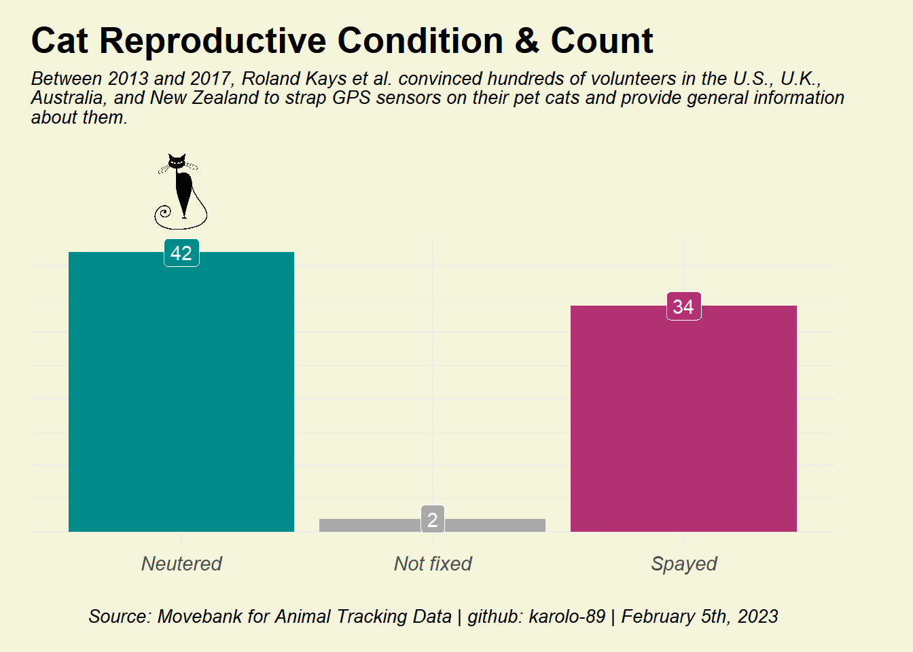

This dataset is full of exciting columns that provide insight into the secret lives of cats. I must admit that dogs are my favorite pets, but many of my friends love cats, and I always hear stories about how independent their pets are, which made me want to learn more about them.
Well, I was born in Colombia, and during my time there, I always remember the cats running and fighting on my roof, which would keep me up at night for a few hours. Then, a few weeks later, I heard tiny meows and noticed the presence of some kittens, which made me suspect that it was another kind of fun that was going on there.
According to the American Society for the Prevention of Cruelty to Animals ASPCA, a female cat can have an average of four to six kittens per litter and may have one to two litters per year. Some cat owners prefer to spay or neuter their cats.
The TidyTuesday, weekly data project, posted on January 31st, 2023, a dataset from the Movebank for Animal Tracking Data, which includes cats’ characteristics (such as age, sex, neuter status, hunting habits) and time-stamped GPS pings. I’ll take a look at the reproductive status of the cats and improve the graph offered by the Twitter user @OluwafemOyedele.
OluwademOyede’s Visualization
You can find the data on the TidyTuesday Github site- “Pet Cats UK”.
Pay Attention
In the graph above, the user combined both data sets: cats_uk and cats_uk_reference, which combined all cat activities and duplicated tag_id. The user did not consider the unique tag_id, which inflated their data points to over 100,000.
By doubling the tag_ids, the data implies that the cat was neutered or spayed multiple times.
Here is the list of cat names, in case you need some inspiration.
cats_uk_reference %>%group_by(animal_reproductive_condition, tag_id)%>%drop_na()%>%ggplot(aes(x = animal_reproductive_condition,fill= animal_reproductive_condition))+geom_bar(aes(x = animal_reproductive_condition,fill= animal_reproductive_condition)) +geom_label(aes(x= animal_reproductive_condition,label=..count..),colour="White",stat='count')+scale_fill_manual(name=NULL, values =c("cyan4","darkgray","#b13173"))+labs(title="Cat Reproductive Condition & Count",caption ="Source: Movebank for Animal Tracking Data | github: karolo-89 | February 5th, 2023",subtitle ="Between 2013 and 2017, Roland Kays et al. convinced hundreds of volunteers in the U.S., U.K.,\nAustralia, and New Zealand to strap GPS sensors on their pet cats and provide general information\nabout them.",y="",x="") +theme_minimal() +theme(legend.position="none",plot.title =element_text(face ="bold", size =20),plot.subtitle =element_text(face ="italic", size=10, margin=margin(0,0,62,0)),plot.caption =element_text(size =10, hjust =0.5, face ="italic"),axis.title.y =element_blank(),axis.text.x =element_text(size =11, face ="italic"),axis.text.y=element_blank(),axis.ticks.y=element_blank(),plot.background =element_rect(fill ="#F5F5DC", colour="#F5F5DC"),panel.background =element_rect(fill ="#F5F5DC", colour="#F5F5DC"),plot.margin =unit(c(1,3,1,1), "lines"))+coord_cartesian(clip ='off') +# This keeps the labels from disappearingannotation_raster(mypng, ymin =45.5, ymax=57, xmin =0.89, xmax =1.1)

Reference
Kays R, Dunn RR, Parsons AW, Mcdonald B, Perkins T, Powers S, Shell L, McDonald JL, Cole H, Kikillus H, Woods L, Tindle H, Roetman P (2020) The small home ranges and large local ecological impacts of pet cats. Animal Conservation. doi:10.1111/acv.12563
McDonald JL, Cole H (2020) Data from: The small home ranges and large local ecological impacts of pet cats [United Kingdom]. Movebank Data Repository. doi:10.5441/001/1.pf315732
Thomas Mock (2022). Tidy Tuesday: A weekly data project aimed at the R ecosystem.GitHub